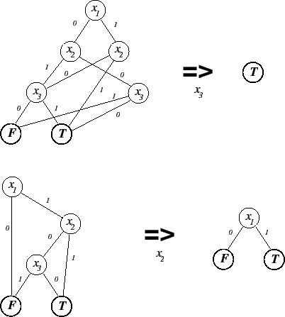
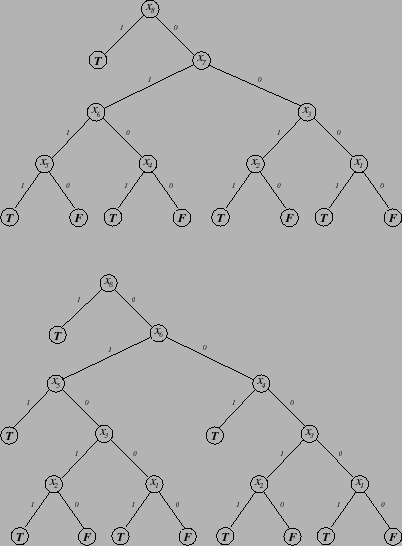

A Boolean function which can be written
|  |
The following is a pseudo C++ implementation ( denotes the ``or'' of
two BDDs):
denotes the ``or'' of
two BDDs):
BDD ExQuant (BDD f, variable x) {
if (root(f) == x) return true(root(f)) false(root(f));
false(root(f));
if (index(x) > index(root(f))) return
f; // If x is not in f do nothing
let  = ExQuant(true(root(f)), x);
= ExQuant(true(root(f)), x);
let  = ExQuant(false(root(f)), x);
= ExQuant(false(root(f)), x);
if ( ==
==  ) return
) return  ;
;
return find_or_add_node (root(f),
 ,
,  );
);
}
Although this operation itself can uncover inferences (see, for
example, Figure 28), those same inferences are
revealed during BDD construction due to the particular way we build
BDDs which includes developing inference lists for each node (see
Section 14.1). Inferences that would be caught
later by existential quantification exist in the BDD root node
inference lists and may be applied early. Therefore, existential
quantification is used by sbsat primarily to assist other
operations, such as strengthening (see
Section 10.5), to uncover those inferences that
cannot be found during BDD construction. Examples of the use of this
operation are shown in Figure 28.
Existential quantification tends to speed up searching (that is, it results in more choicepoints per second) but tends to increase the number of choicepoints. The reason for the latter is that the elimination of a variable may cause subfunctions that had been linked only by that variable to become merged with the result that the distinction between the subfunctions becomes blurred. This is illustrated in Figure 29.
|  |
On the other hand there are fewer inferences to be made during search (``or''ing two functions removes all the F terminals that can be) so the time per choicepoint decreases. The speedup can overcome the lost intelligence but it is sometimes better to turn it off. The major benefit of existential quantification is the smaller search space.
If existential quantification is selected to occur during preprocessing (named in the command-line preprocessing sequence), when invoked, for every variable, the number of BDDs in which that variable is included is determined. If the number is one, existential quantification is applied to that variable in that BDD and the process continues until no variables are included in a single BDD. Thus, after existential quantification, all variables are in at least two BDDs.